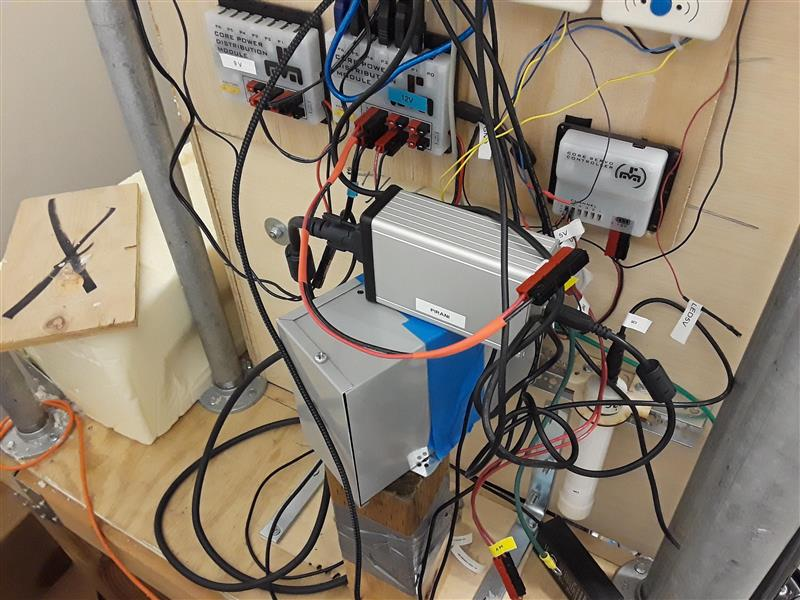

Fusor was created by students at Eastside Preparatory school in 2015. The idea was to create a Farnsworth-Hirsch fusor in the school's basement. This project was also the baby of Mr. Mein, the school's previous technology teacher. Currently, plasma has been created within the vacuum chamber, however, no actual fusion has occured.